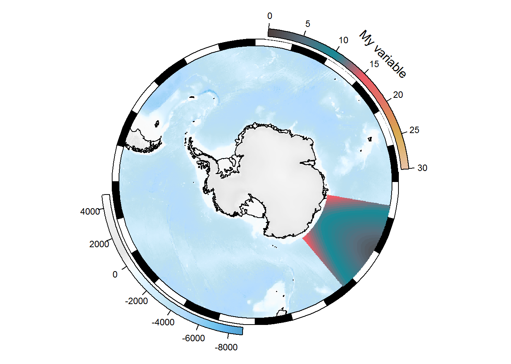
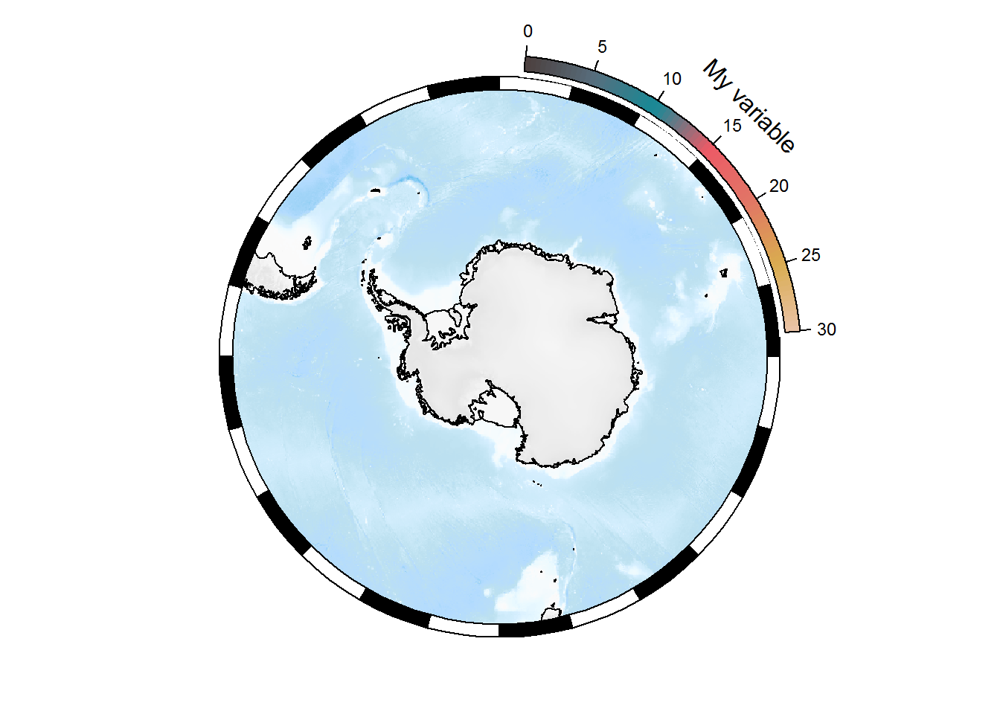

10 Mapping
10.1 Maps in R
The oldest and most core general mapping package in R is the maps package. It has a simple whole-world coastline data set for immediate use.
maps::map()
The data underlying this live map is available by capturing the output as an actual object. Notice that the coastline for Antarctica does not extend to the south pole, and that parts of Russia that are east of 180 longitude are not in the western part of the map.
m <- maps::map(plot = FALSE)
lonlat <- cbind(m$x, m$y)
plot(lonlat, pch = "+", cex = 0.4, axes = FALSE)
lines(lonlat, col = "dodgerblue")
abline(h = c(-90, 90), v = c(-180, 180))A very similar and more modern data set is available in the maptools package.
data("wrld_simpl", package = "maptools")
library(sp)
plot(wrld_simpl)
This data set aligns exactly to the conventional -180/180 -90/90 extent of the longitude/latitude projection.
plot(0, type = "n", axes = FALSE, xlab = "", ylab = "", xlim = c(-180, 180), ylim = c(-90, 90))
rect(xleft = -180, ybottom = -90, xright = 180, ytop = 90, border = "darkred", lwd = 4, lty = 2)
plot(wrld_simpl, add = TRUE)10.1.1 Exercises
- How can we find the longitude and latitude ranges of the maps data
mand the maptools datawrld_simpl? - Can we draw polygons with a fill colour with the maps package?
Answer 1: range(m$x, na.rm = TRUE) range(m$y, na.rm = TRUE) also m$range
Answer 2: polygon(lonlat, col = "grey") does not work, and map(mp, fill = TRUE, col = "grey") does not work, but maps::map(fill = TRUE, col = "grey") does seem to work.
What’s going on? Look at the very south-eastern corner of the map. The “coastline” has been extended to the very south boundary of the available area.
plot(0, type = "n", axes = FALSE, xlab = "", ylab = "", xlim = c(-150, 180), ylim = c(-90, -60))
plot(wrld_simpl, add = TRUE, col = "grey")
rect(xleft = -180, ybottom = -90, xright = 180, ytop = 90, border = "darkred", lwd = 4, lty = 2)
maps::map(add = TRUE, col = "dodgerblue", lwd = 3)When we add the old maps coastline see that it does not extend to 90S and it does not traverse the southern boundary.
One reason for this is that if we choose a projection where the east and west edges of the Antarctic coastline meet then we get what looks a fairly clean join.
## scale factor
f <- 3e6
plot(rgdal::project(lonlat, "+proj=laea +lat_0=-90 +datum=WGS84"), asp = 1, type = "l",
xlim = c(-1, 1) * f, ylim = c(-1, 1) * f, xlab = "", ylab = "")If we try the same with wrld_simpl it’s not as neat. We have a strange “seam” that points exactly to the south pole (our projection is centred on longitude = 0, and latitude = -90.
plot(sp::spTransform(wrld_simpl, "+proj=laea +lat_0=-90 +datum=WGS84"), asp = 1,
xlim = c(-1, 1) * f, ylim = c(-1, 1) * f, xlab = "", ylab = "", lwd = 3)
abline(v = 0, h = 0, lty = 2, col = "grey")10.1.2 Let’s use the maps data!
In m we have the maps data structure, and this looks promising.
str(m)## List of 4
## $ x : num [1:82403] -69.9 -69.9 -69.9 -70 -70.1 ...
## $ y : num [1:82403] 12.5 12.4 12.4 12.5 12.5 ...
## $ range: num [1:4] -180 190.3 -85.2 83.6
## $ names: chr [1:1627] "Aruba" "Afghanistan" "Angola" "Angola:Cabinda" ...
## - attr(*, "class")= chr "map"mp <- m
pxy <- rgdal::project(lonlat, "+proj=laea +lat_0=-90 +datum=WGS84")
mp$x <- pxy[,1]
mp$y <- pxy[,2]
mp$range <- c(range(mp$x,na.rm = TRUE), range(mp$y, na.rm = TRUE))
mp$range## [1] -12709814 12704237 -12576156 12470787plot(c(-1, 1) * f, c(-1, 1) * f, type = "n", asp = 1)
maps::map(mp, add = TRUE)## but it doesn't take much to go awry
plot(c(-1, 1) * f, c(-1, 1) * f, type = "n", asp = 1)
maps::map(mp, add = TRUE, fill = TRUE, col = "grey")The problem is that the maps database has enough internal structure to join lines correctly, with NA gaps between different connected linestrings, but not enough to draw these things as polygons. A similar problem occurs in the default projection. While wrld_simpl has been extend by placing two dummy coordinates at the east and west versions of the south pole, this data set does not have those.
We have to look quite carefully to understand what is happening, but this is wrapping around overlapping itself and so close to the southern bound we barely notice.
plot(0, type = "n", axes = FALSE, xlab = "", ylab = "", xlim = c(-180, -110), ylim = c(-90, -60))
rect(xleft = -180, ybottom = -90, xright = 180, ytop = 90, border = "darkred", lwd = 4, lty = 2)
maps::map(add = TRUE,col = "grey", fill = TRUE)maps::map(col = "grey", fill = TRUE)mpmerc <- m
pxy <- rgdal::project(lonlat, "+proj=merc +datum=WGS84")
mpmerc$x <- pxy[,1]
mpmerc$y <- pxy[,2]
mpmerc$range <- c(range(mpmerc$x,na.rm = TRUE), range(mpmerc$y, na.rm = TRUE))
mpmerc$range## [1] -20037508 20037508 -20179524 18351859## the catastrophe made a little clearer
plot(0, xlim = range(mpmerc$range[1:2]), ylim = c(mpmerc$range[1], 0))
maps::map(mpmerc, fill = TRUE, col = "grey", add = TRUE)10.2 SOmap
The SOmap package is intended to solve some of these problems, and provide an easier way to produce nice-looking maps of Antarctica and the Southern Ocean. It is primarily focused on maps in polar stereographic projection (although the SOmap_auto function extends this to other projections). SOmap won’t necessarily get you exactly the map you want in every circumstance, but the idea is that in most cases it should get you close enough, and if need be you can make modifications to suit your exact purposes.
Please bear in mind that SOmap is still in development, and so its functionality (function parameters and/or behaviour) may change.
By default, SOmap works with base graphics (and associated functionality from packages such as raster and sp). It is also possible to work with ggplot2-based graphics, as described below.
Start by installing the SOmap package if you haven’t done so already:
remotes::install_github("AustralianAntarcticDivision/SOmap")
Temporary note: the code here was written using the development version of SOmap. You may need to install the development version using remotes::install_github("AustralianAntarcticDivision/SOmap", ref = "dev-0.5").
Then load the package:
library(SOmap)
## also define a colour map to use for some examples
my_cmap <- colorRampPalette(c("#4D4140", "#596F7E", "#168B98",
"#ED5B67", "#E27766", "#DAAD50", "#EAC3A6"))(51)10.2.1 Circumpolar maps
A basic circumpolar map in polar stereographic projection:
{r somap1 } SOmap()
SOmanagement() provides a number of contextual layers such as MPA boundaries and management zones.
SOmap(trim = -40) ## plot to 40S
## add the exclusive economic zones management layer
SOmanagement(eez = TRUE)10.2.1.1 Adding points
## some longitude/latitude data
library(sp)
my_points_ll <- data.frame(lon = seq(0, 350, by = 10), lat = -55, z = runif(36))
coordinates(my_points_ll) <- c("lon", "lat")
projection(my_points_ll) <- "+proj=longlat +datum=WGS84"Our data need to be reprojected to match our map before plotting. The SOproj function does this:
## reproject to our SOmap projection
my_points <- SOproj(my_points_ll)
## and plot
SOmap()
plot(my_points, col = "blue", add = TRUE)Or use SOplot to reproject and plot in one step:
SOmap()
SOplot(my_points_ll, col = "blue")
10.2.1.2 Adding raster layers
First let’s construct some artificial raster data (in longitude-latitude space) for demonstration purposes:
library(raster)
temp <- as.data.frame(expand.grid(lon = seq(100, 140, by = 0.25),
lat = seq(-65, -45, by = 0.1)))
temp$val <- sqrt((temp$lon - 120)^2/3 + (temp$lat - -40)^2/5)
## create raster object
xr <- rasterFromXYZ(temp)
projection(xr) <- "+proj=longlat +datum=WGS84"SOplot will reproject and plot this for us:
SOmap()
SOplot(xr)The legend is out of character with the rest of the map. We can use SOleg to fix that:
## draw the base map
SOmap()
## add our raster
SOplot(xr, legend = FALSE, col = my_cmap)
## add the legend
SOleg(xr, position = "topright", col = my_cmap, ticks = 6,
type = "continuous", label = "My variable")OK, well that worked but clearly the labels need tidying up. The easiest way is probably to set the number of decimal places in the label values via the rnd parameter:
SOmap()
SOplot(xr, legend = FALSE, col = my_cmap)
SOleg(xr, position = "topright", col = my_cmap, ticks = 6, rnd = 2,
type = "continuous", label = "My variable")Alternatively, we could explicitly set the colour range and labels.
## draw the base map
SOmap()
## add our raster, controlling the colour range to span the values 0 to 30
colour_breaks <- seq(0, 30, length.out = length(my_cmap) + 1)
SOplot(xr, legend = FALSE, col = my_cmap, breaks = colour_breaks)
## add the legend, again controlling the colour range
label_breaks <- seq(0, 30, length.out = 7)
SOleg(position = "topright", col = my_cmap, breaks = label_breaks,
type = "continuous", label = "My variable")
Note that if we don’t want to show the bathymetric legend, we may run into problems:
SOmap(bathy_legend = FALSE) ## suppress the bathy legend
SOleg(position = "topright", col = my_cmap, breaks = label_breaks,
type = "continuous", label = "My variable")The legend has been chopped off because the layout has not left enough space around the map for the curved legend. Currently, the best solution is probably to generate the SOmap object with the bathymetric legend, but then remove it before plotting (see the Modifying map objects section for more details on this):
temp <- SOmap()
temp$bathy_legend <- NULL ## remove the bathy legend
plot(temp)
SOleg(position = "topright", col = my_cmap, breaks = label_breaks,
type = "continuous", label = "My variable")
Multiple rasters:
xr2 <- raster::shift(xr, -70) ## offset in longitude
SOmap()
SOplot(xr, legend = FALSE, col = my_cmap)
SOplot(xr2, legend = FALSE, col = my_cmap)10.2.2 Non-circumpolar maps
The SOmap_auto function will take your input data and make a guess at an appropriate projection and extent to use. Note that this is not always going to guess the best projection and extent, so you should view it as a starting point from which you can generate a map to your exact requirements.
Use the elephant seal track data bundled with the package:
ellie <- SOmap_data$mirounga_leonina
## construct and plot the map
SOmap_auto(ellie$lon, ellie$lat)Just a blank map to which you could add other things:
SOmap_auto(ellie$lon, ellie$lat, input_points = FALSE, input_lines = FALSE)You can pass a raster as input data, but note that it won’t plot the raster (it uses its extent to infer an appropriate extent for the map):
SOmap_auto(xr)But we can add the raster if we wish:
SOmap_auto(xr)
SOplot(xr, col = my_cmap)We can force a particular projection:
SOmap_auto(xr, target = "laea", centre_lon = 147, centre_lat = -42)
SOplot(xr, col = my_cmap)Same but by supplying a full proj4 string to target:
SOmap_auto(xr, target = "+proj=laea +lat_0=-42 +lon_0=147")
SOplot(xr, col = my_cmap)
See the SOmap_auto vignette for more examples.
10.2.3 Plotting via ggplot2
The SOmap and SOmap_auto functions do their plotting using base graphics. If you are more comfortable working with ggplot2, this is also possible. The SOgg function takes an object created by one of those functions (using base graphics) and converts it to use ggplot2 graphics instead. As with other SOmap functions, this returns an object (of class SOmap_gg or SOmap_auto_gg) that contains all of the information needed to generate the map. Printing or plotting this object will cause it to construct a ggplot object. Printing or plotting that object will cause it to be drawn to the graphics device, just like any other ggplot object.
myplot <- SOmap()
myplotgg <- SOgg(myplot) ## creates a SOmap_gg object
class(myplotgg)## [1] "SOmap_gg"my_ggplot <- plot(myplotgg) ## creates a ggplot object
class(my_ggplot)## [1] "gg" "ggplot"plot(my_ggplot) ## plot itOr in one step (this will cause myplot to be converted to SOmap’s internal gg format, then a ggplot object constructed from that, then that object will be plotted):
SOgg(myplot)
10.2.4 Modifying map objects (advanced usage)
The goal of SOmap is to make it fairly easy to produce a fairly-good-looking map that will be adequate for most mapping requirements. It will never be possible to automatically produce a perfect map in every circumstance, but the aim is to have a low-effort way of getting fairly close most of the time.
This section describes some approaches to modifying a map to get it closer to your particular needs. Be warned: depending on the exact modifications needed, this might get you pretty close to the crumbling edge of SOmap development. In particular, anything that requires modifying the internal structure of an SOmap object may change in the future (with luck, we’ll make this sort of thing easier - but we’re not there yet.)
10.2.4.1 Modifying base graphics maps
Calls to SOmap(), SOmanagement(), SOmap_auto() return an object of class SOmap, SOmap_management, or SOmap_auto. These objects contain all of the data and plotting instructions required to draw the map. Calling print() or plot() on one of these objects will cause that code to be executed, and the object to be drawn in the current graphics device. Hence, calling SOmap() directly without assigning the result to a variable will make it appear in the graphics device, because the returned object is being printed to the console (and thus triggering the print method). But you can also assign the result to a variable, e.g. myplot <- SOmap() and then explicitly plot the object with plot(myplot). The advantage of this is that you can potentially manipulate the myplot object to make changes to the map before plotting it.
Note, this is likely to be fragile. Proceed at your own risk!
mymap <- SOmap()
names(mymap)## [1] "projection" "target" "straight" "trim"
## [5] "bathy" "box" "plot_sequence" "coastline"
## [9] "ice" "outer_mask" "bathy_legend" "border"The object contains a plot_sequence component, which defines the order in which each part of the plot is drawn. The other components of the object contain the code required to draw each part. Take e.g. the ice component (this is the ice shelves, glacier tongues, etc). This is a list (in this case with only one element). Each element of the list specifies a function to run along with arguments to pass to it:
str(mymap$ice)## List of 1
## $ :List of 2
## ..$ plotfun : chr "plot"
## ..$ plotargs:List of 4
## .. ..$ x :sfc_POLYGON of length 354; first list element: List of 1
## .. .. ..$ : num [1:5, 1:2] 1022981 1026000 1021994 1021935 1022981 ...
## .. .. ..- attr(*, "class")= chr [1:3] "XY" "POLYGON" "sfg"
## .. ..$ col : logi NA
## .. ..$ border: chr "black"
## .. ..$ add : logi TRUE
## ..- attr(*, "class")= chr "SO_plotter"We can modify the function and/or its arguments:
mymap$ice[[1]]$plotargs$col <- "green"plot(mymap)
We can remove entire components:
temp <- mymap
temp$coastline <- NULL
temp$ice <- NULL
plot(temp)But note that some elements are required (in particular, the bathymetry layer can’t currently be removed because the code that draws this is also the code that creates the plot). This code would fail (not run here):
temp <- mymap
temp$bathy <- NULL
plot(temp)However, we could replace the bathymetry data with another raster object. We need to be careful about the extent and projection of this raster. For example, simply replacing the bathymetry raster with the ice raster (which has the same polar stereographic projection but smaller extent) gives:
temp <- mymap
temp$bathy[[1]]$plotargs$x <- ice
temp$bathy_legend <- NULL
plot(temp)But if we extend the ice raster to match the map extent:
temp <- mymap
temp$bathy[[1]]$plotargs$x <- raster::extend(ice, mymap$target)
temp$bathy_legend <- NULL
plot(temp)10.2.4.2 Modifying ggplot maps
We can modify ggplot2-based maps at two levels.
10.2.4.2.1 Modifying the ggplot object.
Remember that printing or plotting a SOmap_gg object produces a ggplot object. This can be modified by adding e.g. layers or themes just like a normal ggplot. Remember to load the ggplot2 library now that we are using ggplot2 functions directly.
library(ggplot2)
my_ggplot + geom_point(data = as.data.frame(my_points), aes(lon, lat, colour = z), size = 3) +
scale_colour_distiller(palette = "Spectral")Multiple rasters or multiple sets of points gets tricky if they are on different scales, because ggplot2 is only designed to work with a single colour scale per geometry type. You can try your luck with the ggnewscale or relayer packages, although both are in a fairly experimental stage of development.
## remotes::install_github("clauswilke/relayer")
library(relayer)
plot(SOgg(SOmap(straight = TRUE))) +
rename_geom_aes(geom_raster(data = as.data.frame(SOproj(xr), xy = TRUE),
aes(x = x, y = y, fill2 = val)), new_aes = c(fill = "fill2")) +
scale_fill_gradientn(aesthetics = "fill2", colors = my_cmap, na.value = NA,
name = "My variable", guide = "legend")## remotes::install_github("eliocamp/ggnewscale")
library(ggnewscale)
plot(SOgg(SOmap(straight = TRUE))) +
new_scale_fill() +
geom_raster(data = as.data.frame(SOproj(xr), xy = TRUE),
aes(x = x, y = y, fill = val)) +
scale_fill_gradientn(colors = my_cmap, na.value = NA, name = "My variable")
10.2.4.2.2 Modifying the SOmap_gg object
SOmap_gg objects are similar in structure to SOmap objects, in that they contain all of the data and plotting instructions required to draw the map:
names(myplotgg)## [1] "projection" "target" "straight" "trim"
## [5] "init" "bathy" "coord" "plot_sequence"
## [9] "scale_fill" "bathy_legend" "coastline" "ice"
## [13] "axis_labels" "theme" "border"However, instead of base plotting functions, SOmap_gg objects use ggplot2 function calls, e.g.:
myplotgg$ice[[1]]$plotfun## [1] "ggplot2::geom_sf"We can modify these functions and/or arguments in a similar manner to SOmap objects.
myplotgg$ice[[1]]$plotargs$fill <- "green"plot(myplotgg)
Or remove the bathymetric raster layer:
temp <- myplotgg
temp$bathy <- NULL
temp$bathy_legend <- NULL
plot(temp)Or replace it with a different raster (use the ice raster as an example):
temp <- myplotgg
## convert ice raster to suitable data.frame
ice_raster_as_df <- raster::as.data.frame(SOproj(ice), xy = TRUE)
names(ice_raster_as_df)[3] <- "ice"
## add this to our object in place of bathy
temp$bathy <- SO_plotter(plotfun = "ggplot2::geom_raster",
plotargs = list(data = ice_raster_as_df,
mapping = aes_string(fill = "ice"))
)
## change the colour scale
temp$scale_fill[[1]]$plotargs <- list(colours = my_cmap, na.value = "#FFFFFF00", guide = FALSE)
## remove the bathy legend
temp$bathy_legend <- NULL
plot(temp)10.3 Supporting data for maps
When constructing maps, we commonly want to show features like oceanographic fronts, ice extent, coastline, place names, and MPA boundaries. There are a few sources of such data:
- some layers are bundled into
SOmap, see theSOmap::SOmap_dataobject antanymprovides access to the SCAR Composite Gazetteer of place names- the
quantarcticRpackage provides access to Quantarctica data layers.
10.3.1 quantarcticR
Note, this package is still in development, so the usage as shown here might change in later versions. Install if needed:
remotes::install_github("SCAR-sandpit/quantarcticR")Example usage:
library(quantarcticR)## Quantarctica is made available under a CC-BY license. If you use it, please cite it:
## Matsuoka K, Skoglund A, Roth G (2018) Quantarctica [Data set]. Norwegian Polar Institute. https://doi.org/10.21334/npolar.2018.8516e961
## In addition, published works produced using Quantarctica are asked to cite each dataset that was used in the work. Please consult the abstract of each data set for the relevant citation.
##
## QuantarcticR is using a temporary data directory for this session: see the `qa_cache_dir` function to change this.ds <- qa_datasets() ## all available layers
head(ds)## # A tibble: 6 x 5
## layername
## <chr>
## 1 Overview place names
## 2 COMNAP listed facilities
## 3 Subantarctic stations
## 4 SCAR Composite gazetteer
## 5 IBO-IOC GEBCO Features (point)
## 6 IBO-IOC GEBCO Features (multipoint)
## main_file
## <chr>
## 1 "C:\\Users\\ben_ray\\AppData\\Local\\Temp\\Rtmpq0b7Uf/quantarcticR-cache~
## 2 "C:\\Users\\ben_ray\\AppData\\Local\\Temp\\Rtmpq0b7Uf/quantarcticR-cache~
## 3 "C:\\Users\\ben_ray\\AppData\\Local\\Temp\\Rtmpq0b7Uf/quantarcticR-cache~
## 4 "C:\\Users\\ben_ray\\AppData\\Local\\Temp\\Rtmpq0b7Uf/quantarcticR-cache~
## 5 "C:\\Users\\ben_ray\\AppData\\Local\\Temp\\Rtmpq0b7Uf/quantarcticR-cache~
## 6 "C:\\Users\\ben_ray\\AppData\\Local\\Temp\\Rtmpq0b7Uf/quantarcticR-cache~
## type cached download_size
## <chr> <lgl> <fs::bytes>
## 1 shapefile FALSE 19.74K
## 2 shapefile FALSE 691.92K
## 3 shapefile FALSE 691.92K
## 4 shapefile FALSE 329.05M
## 5 shapefile FALSE 1.25M
## 6 shapefile FALSE 1.25M## more info about a particular layer
my_layer <- qa_dataset("Median sea ice extent 1981-2010")
my_layer## # A tibble: 1 x 11
## layername
## <chr>
## 1 Median sea ice extent 1981-2010
## datasource
## <chr>
## 1 SeaIce/Median Ice Extents/Median_SeaIce_Extents_1981-2010.shp
## layer_attributes srs_attributes provider
## <list> <list> <chr>
## 1 <NULL> <tibble [1 x 4]> ogr
## abstract
## <chr>
## 1 "Monthly median sea ice extents for the period 1981-2010.\n\nFetterer, F~
## extent palette type download_size
## <list> <list> <chr> <fs::bytes>
## 1 <NULL> <NULL> shapefile 131K
## main_file
## <chr>
## 1 "C:\\Users\\ben_ray\\AppData\\Local\\Temp\\Rtmpq0b7Uf/quantarcticR-cache~## fetch the actual data for that layer
layer_data <- qa_get(my_layer)
## plot it
plot(layer_data[layer_data$MONTH == "October", ])
## or add to a SOmap
SOmap(trim = -50, border_width = 0.5)
SOplot(layer_data[layer_data$MONTH == "October", ], col = "red")
10.3.2 antanym
See the overview article.